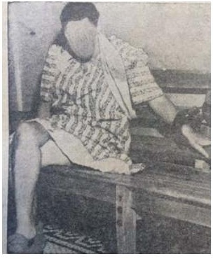

Then I thought, maybe I ought to spill a little blood for practice, so I sat on the edge of the tub and crossed my right ankle over my left knee. Then I lifted my right hand with the razor and let it drop of its own weight, like a guillotine, on to the calf of my leg.
Sylvia Plath · The Bell Jar · p. 189